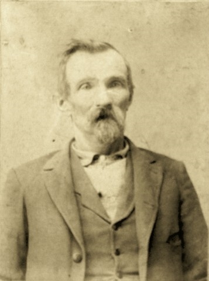
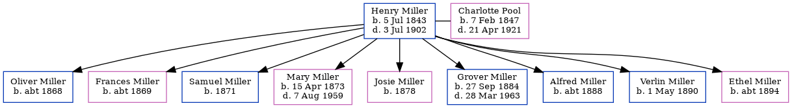

Henry William Charles Miller 1843 - 1902 [ Home ] | [ Calendar ] | [ Surnames Index ] | [ Family History ]Henry Miller , the husband of Charlotte Maria Pool (the second cousin four-times-removed on the mother's side of Nigel Horne ), was born in New Orleans, Orleans, Louisiana, USA on Jul 5, 18431,2 and married Charlotte (with whom he had 9 children: Oliver , Frances , Samuel , Mary Ann , Josie , Grover Robert , Alfred , Verlin and Ethel H ) in Clay, Indiana, USA on Oct 24, 18653 .
Throughout his life, Henry lived in several places: in Lewis, Indiana on Jun 1, 18701 ; in Clay on Jun 1, 18802 ; and in Owen, Indiana, USA on Jun 1, 19004 .
He died on Jul 3, 1902.
Children Oliver was born c. 1868Frances was born c. 1869Samuel was born in 1871Mary Ann was born on Apr 15, 1873Josie was born in 1878Grover Robert was born on Sep 27, 1884Alfred was born c. 1888Verlin was born on May 1, 1890Ethel H was born c. 1894Citations US Census 1870 - Findmypast (was age 29) Us Census 1880 - Findmypast (was age 38 and the head of the household) United States Marriages - Findmypast US Census 1900 - Findmypast (was the head of the household) Media Henry W C Miller  United States Marriages - R_1128536728 United States Marriages - FS/MAR/37373275/1 US Census 1870 - USC/1870/004263289/00219/010 United States Marriages - R_1128536728/1 Family Tree Map
Generated by Ged2Site . Last updated on Apr 1, 2025